10 Dados de Área I
10.1 Introdução
Na análise de áreas o atributo estudado é em geral resultado de uma contagem ou uma medida de síntese.
O objetivo é a detecção e explicação de padrões e tendências observados entre áreas.
Área é definida por um polígono, cuja forma pode ser complexa, bem como as relações de vizinhança.
O modelo básico do banco de dados:
| ID | Local | Casos | População | Médicos p/ 1000 hab |
|---|---|---|---|---|
| 001 | Rio Bom | 41 | 3209 | 5,4 |
| 002 | Serra Verde | 320 | 16897 | 2,6 |
| 003 | Poço Fundo | 67 | 2569 | 1,3 |
10.2 Principais bibliotecas do R
10.2.1 Novas bibliotecas (2023 em diante)
sf(pacote moderno para dados de pontos, áreas, linhas etc…)ggspatial(funções espaciais do sf para ggplot )spatstat(análise de processos pontuais)splancs(análise de processos pontuais)spdep(análise de dados de área)SpatialEpi(métodos para análise epidemiológica espacial)tmap(mapas temáticos)mapsf(mapas temáticos)terra(dados raster)stars(raster spaço temporal)
10.2.2 bibliotecas antigas
maptools(visualização de dados de área)sp(antiga classe para dados pontos, área, grids, etc…)rgdalrgeos
OBS:
a biblioteca sp_2.1-0 foi publicado em 2 de outubro de 2023, eliminando todas as dependências dos pacotes obsoletos. sp continuará disponível e mantida, mas não será mais desenvolvida posteriormente.
Para saber mais acesse:
Podemos ver outros pacotes que podem interessar em:
10.3 Pontos importantes
Apesar de estarmos acostumados a analisar e interpretar dados apresentados em mapas coropléticos, existem algumas detalhes a que devemos estar sempre atentos.
10.3.1 Pontos de Corte em mapas
Veja os mapas abaixo. Eles contêm exatamente a mesma variável e a mesma paleta de cores, o que está diferente neles?
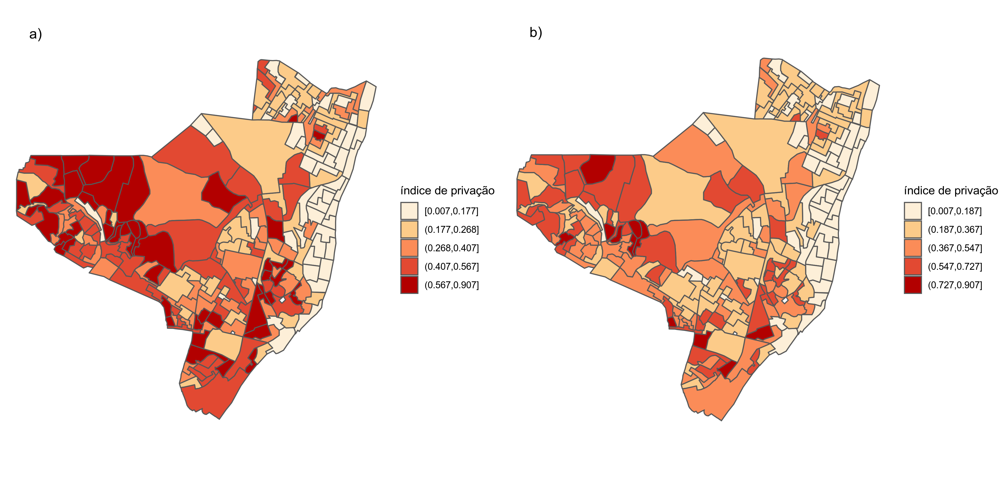
Veja a seguir o gráfico da densidade da variável índice de privação nos setores censitários em Olinda-PE. Os números mostram a quantidade de setores em cada classe.
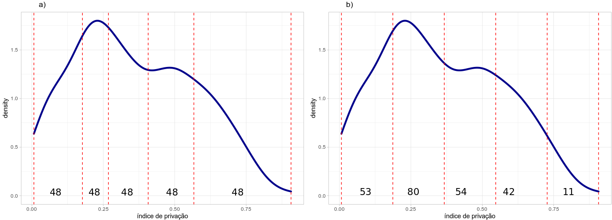
10.3.2 Escala fixa ao longo do tempo
Outro ponto importante: quando se quer comparar mapas (por exemplo, em momentos distintos no tempo), é preciso se certificar que as classes sejam as mesmas em todos eles.
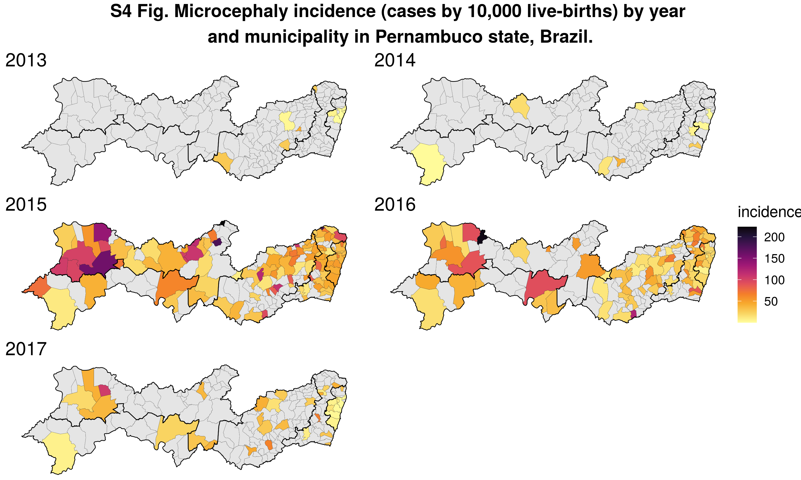
Fonte: SINASC.10.3.3 Tamanho heterogêneo das áreas
Devemos estar atentos a grandes áreas (polígonos maiores) que apresentam uma população menor e em geral sujeita a valores extremos devido a instabildiade em pequenas áreas.
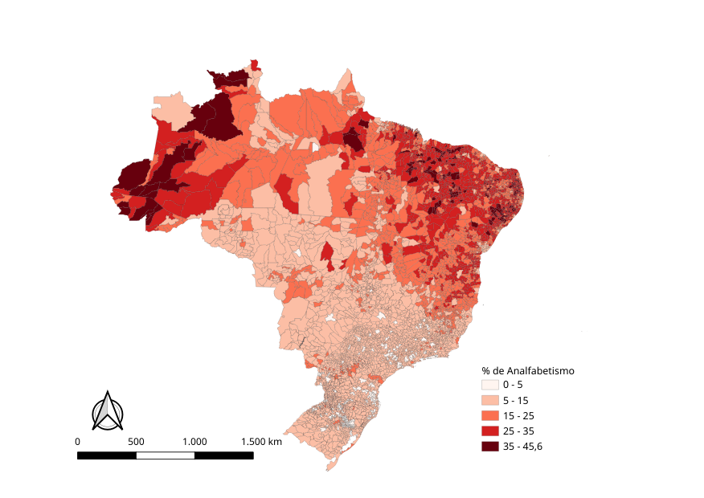
Compare agora com a densidade populacional:
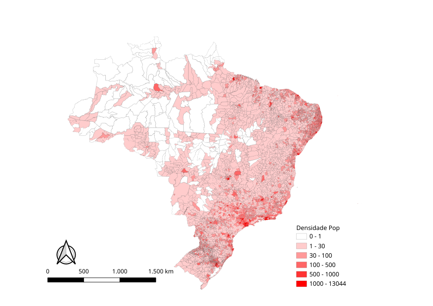
10.3.4 O problema da área modificável (MAUP)
A utilização de variáveis agregadas, notadamente em pequenas áreas (setores censitários,quadras, etc…), pode levar a um problema pois as estatísticas obtidas nessas áreas (como por exemplo taxas, medidas de autocorrelação e regressões) podem variar em função do recorte empregado. A este problema soma-se a variação em pequenos números que nos obriga a empregar técnicas para reduzir esse efeito.
Existem dois principais efeitos:
- Efeitos da Escala
Este efeito ocorre quando se analise o mesmo dado em escalas diferentes, como pro exemplo em setores censitários e bairros ; bairros para regiões administrativas ; municipio para regional de saúde… Similar ao problema do paradoxo de Simpson!
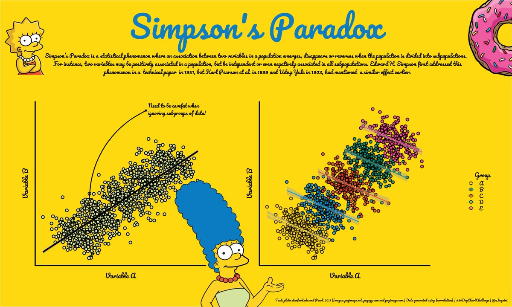
- Efeito de Zoneamento
Este efeito acontece na mesma escala, não sendo um problema relacionado ao nível de agregação, mas sim à maneira que se recorta o espaço usando polígonos diferentes.
Por exemplo, na mesma área usar polígonos de abrangência de uma UBS e do PSF.
Por exemplo, se analisarmos um evento por quadras:
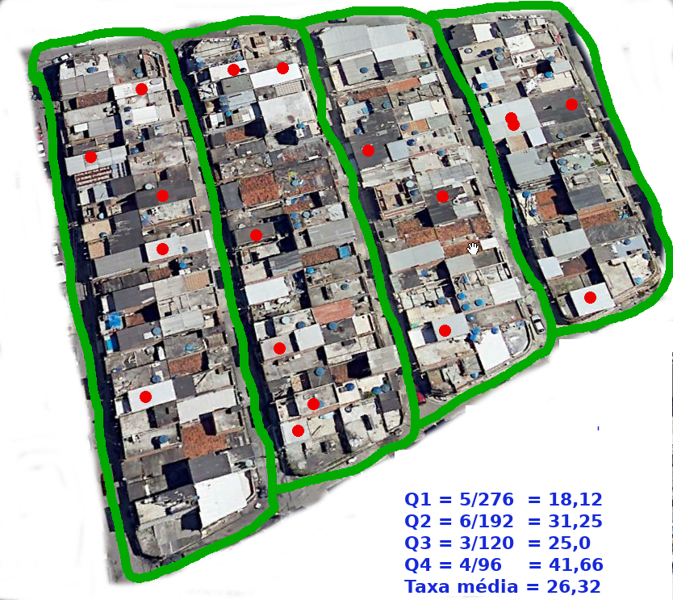
Se analisarmos este mesmo evento por setores censitários, podemos obter resultados diferentes.
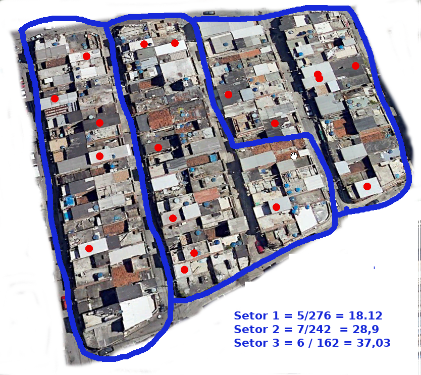
- Exemplo Gerrymandering
No EUA no contesto eleitoral esse recorte intencional das áreas é conhecido por Gerrymandering.É um método de definição dos distritos eleitorais de um território com o objetivo de obter vantagens no número de representantes políticos eleitos, em especial nos locais onde se utiliza o sistema eleitoral majoritário com voto distrital.
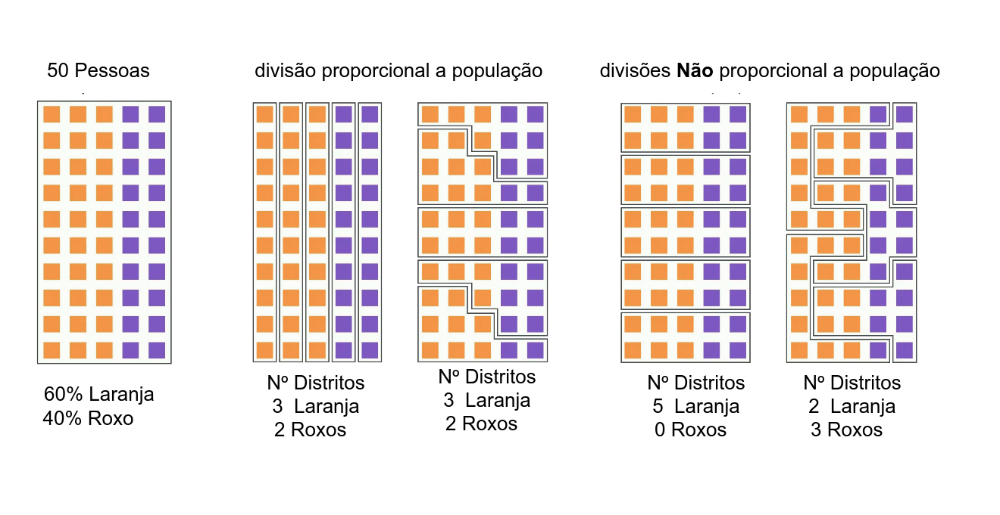
Na figura abaixo podemos ver dois exemplos desse fenômeno. Note que os distritos são enormes +/- 760.00 hab isso facilita muito essa pratica.
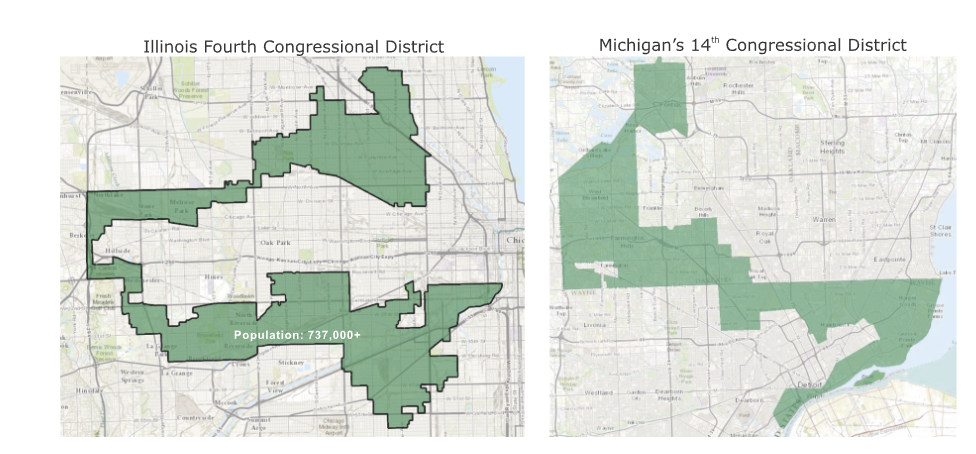
Para saber mais:
10.4 Exemplo em R
Para os exemplos a seguir utilizaremos as bibliotecas:
library(tidyverse)
library(sf)
library(maptools)
library(cartography)
library(osmdata) # Open Street MapAntes de mais nada, como na aula anterior, vamos baixar o ZIP contendo os arquivos no formato shape.
# Opções para o Windows não se perder
options(download.file.method = "libcurl", url.method = "libcurl")
# Local dos dados na rede
local <- "https://raw.githubusercontent.com/ogcruz/dados_eco_2023/main/dados/"
# tmpdir <- tempdir()
download.file(paste0(local, "olinda.zip"), destfile = "olinda.zip")
unzip(zipfile = "olinda.zip", exdir = "olinda/")
dir("olinda")Lendo o shape de Olinda e exibindo os primeiros registros:
## Simple feature collection with 241 features and 10 fields
## Geometry type: POLYGON
## Dimension: XY
## Bounding box: xmin: 289000 ymin: 9111000 xmax: 298400 ymax: 9121000
## Projected CRS: SAD69(96) / UTM zone 25S
## # A tibble: 241 × 11
## AREA PERIMETER SETOR_ SETOR_ID VAR5 DENS_DEMO SET CASES POP DEPRIV geometry
## * <dbl> <dbl> <dbl> <dbl> <int> <dbl> <dbl> <dbl> <dbl> <dbl> <POLYGON [m]>
## 1 79139. 1270. 2 1 242 4380. 242 1 337 0.412 ((295638 9120506, 295599 9120446, 295506 9120324, 295599 9120260, 295560 9120190, 295520 ...
## 2 151153 2189. 3 2 224 10563. 224 6 1550 0.168 ((295909 9120474, 295909 9120473, 295893 9120443, 295889 9120405, 295884 9120395, 295868 ...
## 3 265037 2818. 4 3 223 6642. 223 5 1711 0.192 ((295909 9120473, 295909 9120474, 295913 9120481, 296371 9120195, 296299 9120071, 296465 ...
## 4 137696 2098. 5 4 229 13174. 229 1 1767 0.472 ((295527 9120106, 295691 9119937, 295716 9119911, 295774 9119851, 295783 9119842, 295791 ...
## 5 121873 3353. 6 5 228 13812. 228 1 1638 0.302 ((295560 9120190, 295604 9120260, 295642 9120238, 295617 9120180, 295616 9120179, 295770 ...
## 6 55007. 1078. 7 6 222 21309. 222 4 1139 0.097 ((296694 9119921, 296674 9119899, 296613 9119832, 296604 9119837, 296605 9119835, 296465 ...
## 7 225463 2028. 8 9 218 5422. 218 6 1186 0.141 ((298128 9119189, 297987 9119214, 298028 9119457, 298042 9119509, 298152 9119852, 298193 ...
## 8 184847 2547. 9 10 225 11724. 225 2 2108 0.199 ((296674 9119899, 296694 9119921, 296781 9119865, 296781 9119864, 296620 9119672, 296742 ...
## 9 82379. 1636. 10 11 227 13646. 227 1 1088 0.228 ((296142 9119871, 296308 9119748, 296309 9119747, 296305 9119743, 296305 9119742, 296197 ...
## 10 75166. 1094. 11 12 221 21053. 221 6 1535 0.223 ((296620 9119672, 296781 9119864, 297010 9119713, 296904 9119566, 296869 9119516, 296851 ...
## # ℹ 231 more rows10.5 Visualização: Mapa Temático usando a biblioteca tmap
library(tmap)
tm_shape(olinda.sf) + tm_polygons("POP", style = "quantile",
palette = "BuPu") + tm_legend(legend.position = c("left",
"bottom"))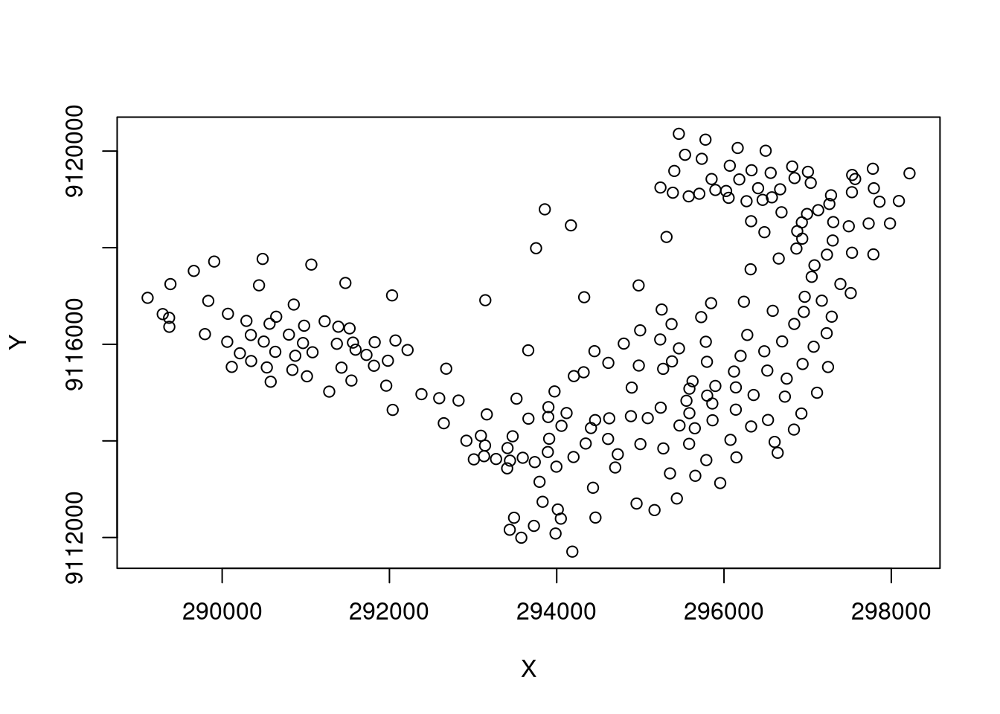
Calculando a taxa bruta de detecção por 10000:
Plotando o mapa temático da taxa de detecção:
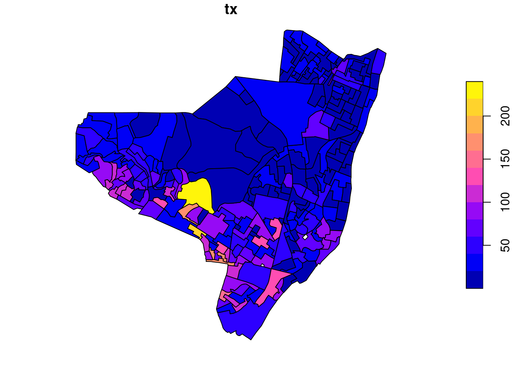
Utilizando o ggplot para plotar o mapa temático da taxa de detecção:
ggplot(olinda.sf) + geom_sf(aes(fill = cut_number(tx,
5))) + scale_fill_brewer("Taxa de Detecção",
palette = "OrRd") + ggtitle("Taxa de Detecção de Hanseníase") +
theme_void()
Gerando mapas temáticos interativos da taxa de detecção:
tm_shape(olinda.sf) + tm_polygons("tx", style = "quantile",
title = "Taxa de Detecção de Hanseníase")
Plotando o bubble map da taxa:
plot(st_geometry(olinda.sf))
propSymbolsLayer(x = olinda.sf, var = "tx", legend.title.txt = "Taxa de Detecção",
col = "#a7dfb4")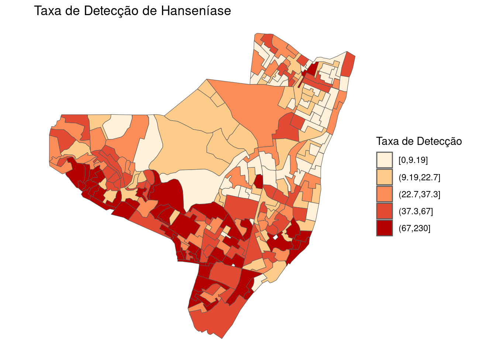
10.7 Medidas de proximidade em dados de área
Quando trabalhamos com atributos variando continuamente na área de estudo (geoestatística) é natural usar distância entre localizações como medida de proximidade espacial.
Precisamos definir como medir proximidade espacial em dados de área.
Poderíamos calcular, por exemplo, a distância entre os centros ou centróides dos polígonos.
De forma mais geral, utilizamos uma matriz \(W\), onde cada elemento \(w_{ij}\) representa medida de proximidade espacial entre as áreas \(A_i\) e \(A_j\).
A escolha de \(w_{ij}\) depende do tipo de dado, da região, dos mecanismos particulares da dependência espacial.
10.8 Matriz de vizinhança
Possíveis critérios:
| Tipos | Matrizes |
|---|---|
| 1 | \[w_{ij} = \begin{cases} 1 \ \ \text{centróide de } A_i \ \text{é o mais próximo de } A_j \\ 0 \ \ \text{caso contrário} \end{cases}\] |
| 2 | \[w_{ij} = \begin{cases} 1 \ \ \text{centróide de } A_i \ \text{dentro de distância especificada de } A_j \\ 0 \ \ \text{caso contrário} \end{cases}\] |
| 3 | \[w_{ij} = \begin{cases} 1 \ \ A_i \ \text{tem fronteira comum com } A_j \\ 0 \ \ \text{caso contrário} \end{cases}\] |
| 4 | \[w_{ij} = \dfrac{I_{ij}}{I_i} \ \text{sendo} \ I_{ij} \ \text{o comprimento da fronteira comum entre }A_i \ \text{e} \ A_j. I_{i} \ \text{é o perímetro de } \ A_i\] |
Vizinhança por contiguidade
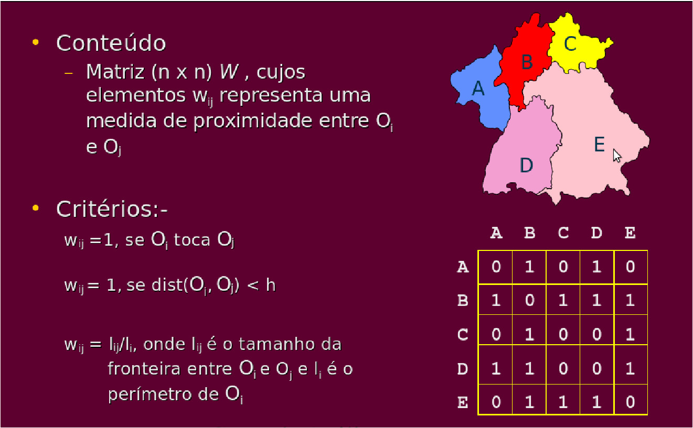
Ex: Ligações por estradas asfaltadas entre os municı́pios do estado do Rio de Janeiro.
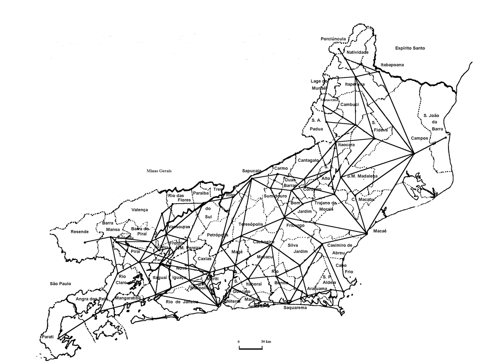
Construindo a Matrix de vizinhanca (lista de vizinhos):
A função poly2nb da bilioteca spdep cria uma lista de vizinhos a
partir de poligonos para áreas que fazem fronteira uma com a outra.
Repare o número medio de conexões 5.49.
Neighbour list object: Number of regions: 241 Number of nonzero links: 1324 Percentage nonzero weights: 2.28 Average number of links: 5.494
A classe do obj viz á “lista de vizinho” (nb=neighbours lists).
[1] “nb”
Para fazer a vizinhança por conectividade, iremos precisar das coordenadas dos centróides:
olinda.sp <- as(olinda.sf, "Spatial") # convertendo em formato sp
coord <- coordinates(olinda.sp) # coordenadas dos centroidas dos polígonos de olinda
class(olinda.sp)[1] “SpatialPolygonsDataFrame” attr(,“package”) [1] “sp”
viz.sf <- as(nb2lines(viz, coords = coord), "sf")
viz.sf <- st_set_crs(viz.sf, st_crs(olinda.sf))
# Plota o grafo de conectividade por contiguidade
mapa.viz1 <- ggplot(olinda.sf) + geom_sf(fill = "salmon",
color = "white") + geom_sf(data = viz.sf, size = 0.4) +
theme_minimal() + ggtitle("Vizinhança por conectividade") +
ylab("Latitude") + xlab("Longitude")
mapa.viz1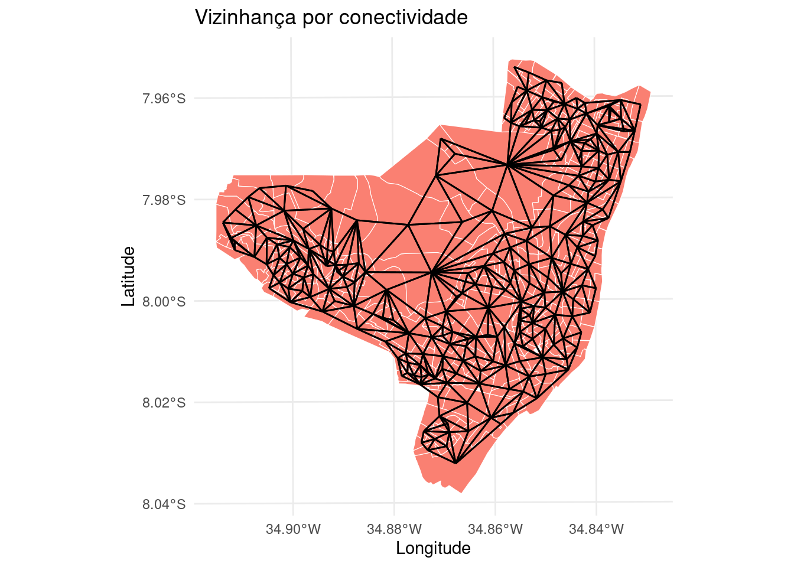
Contruindo uma lista de K vizinhos mais próximos. Neste exemplo será feita a conectividade dos vizinhos mais próximos de primeira ordem.
viz2 <- knn2nb(knearneigh(coord, 1))
viz2.sf <- as(nb2lines(viz2, coords = coord), "sf")
viz2.sf <- st_set_crs(viz2.sf, st_crs(olinda.sf))
mapa.viz2 <- ggplot(olinda.sf) + geom_sf(fill = "salmon",
color = "white") + geom_sf(data = viz2.sf, size = 0.4) +
theme_minimal() + ggtitle("Vizinhança dos vizinhos \nmais próximos de 1ª ordem") +
ylab("Latitude") + xlab("Longitude")
mapa.viz2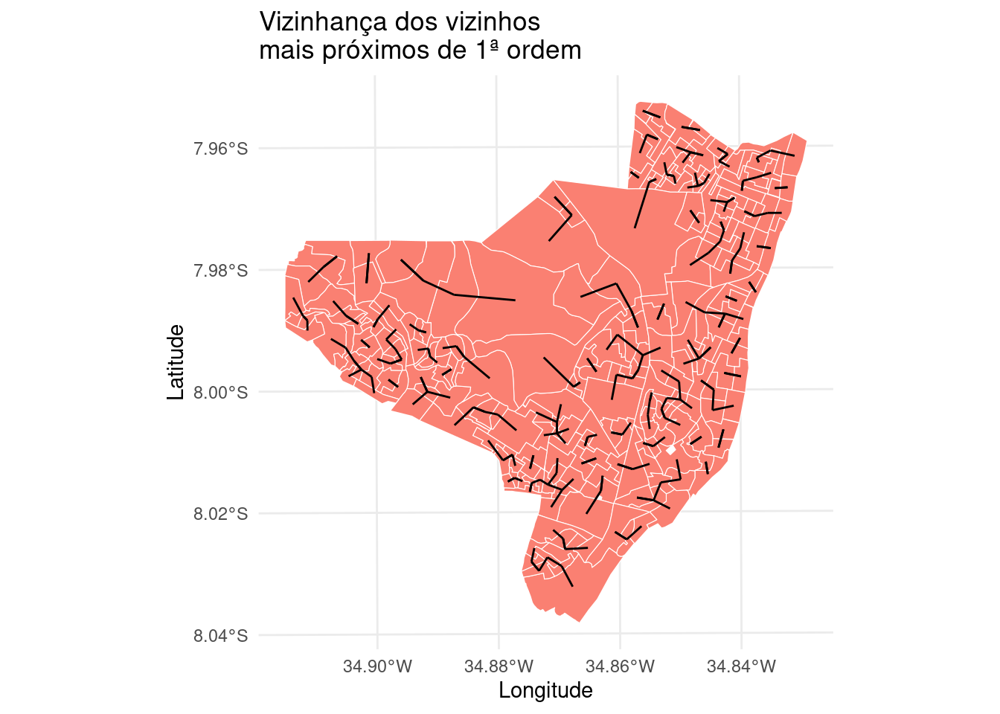
Contruindo conectividade dos vizinhos por triangulação (polígono de voronoi).
viz3 <- tri2nb(coord)
viz3.sf <- as(nb2lines(viz3, coords = coord), "sf")
viz3.sf <- st_set_crs(viz3.sf, st_crs(olinda.sf))
mapa.viz3 <- ggplot(olinda.sf) + geom_sf(fill = "salmon",
color = "white") + geom_sf(data = viz3.sf, size = 0.4) +
theme_minimal() + ggtitle("Vizinhança por triangulação") +
ylab("Latitude") + xlab("Longitude")
mapa.viz3
Contruindo conectividade dos vizinhos usando a distância entre os pontos. Se as coordenadas estiverem em UTM, temos distância em metros.
dista <- dist(coord) # distância euclidiana entre centroides
dista <- dista[lower.tri(dista)] # pega apenas o triângulo inferior
summary(dista) # sumário das distânciasMin. 1st Qu. Median Mean 3rd Qu. Max. NA’s 91 2298 4117 4071 5780 9467 7260

viz4 <- dnearneigh(coordinates(olinda.sp), 1, 1000) # vizinhos a cada 1000m do centroide
viz4.sf <- as(nb2lines(viz4, coords = coord), "sf")
viz4.sf <- st_set_crs(viz4.sf, st_crs(olinda.sf))
# plota o grafo de conectividade da distancia ate
# 1000m
mapa.viz4 <- ggplot(olinda.sf) + geom_sf(fill = "salmon",
color = "white") + geom_sf(data = viz4.sf, size = 0.4) +
theme_minimal() + ggtitle("Vizinhança pela distância \n das coordenadas (1000m)") +
ylab("Latitude") + xlab("Longitude")
mapa.viz4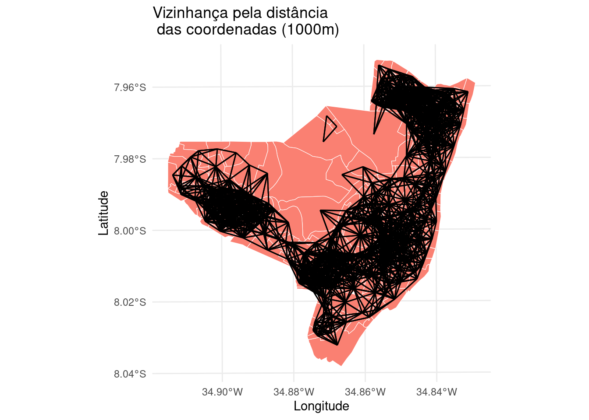

10.9 Médias Móveis espaciais
A média móvel espacial é dada por:
\[\hat{\mu} = \dfrac{\sum_{j=1}^{n} w_{ij} y_i}{\sum_{j=1}^{n} w_{ij}}\]
Sendo:
\(w_{ij}\) a ponderação obtida da matriz de vizinhança
\(y_i\) o valor do atributo na área \(i\)
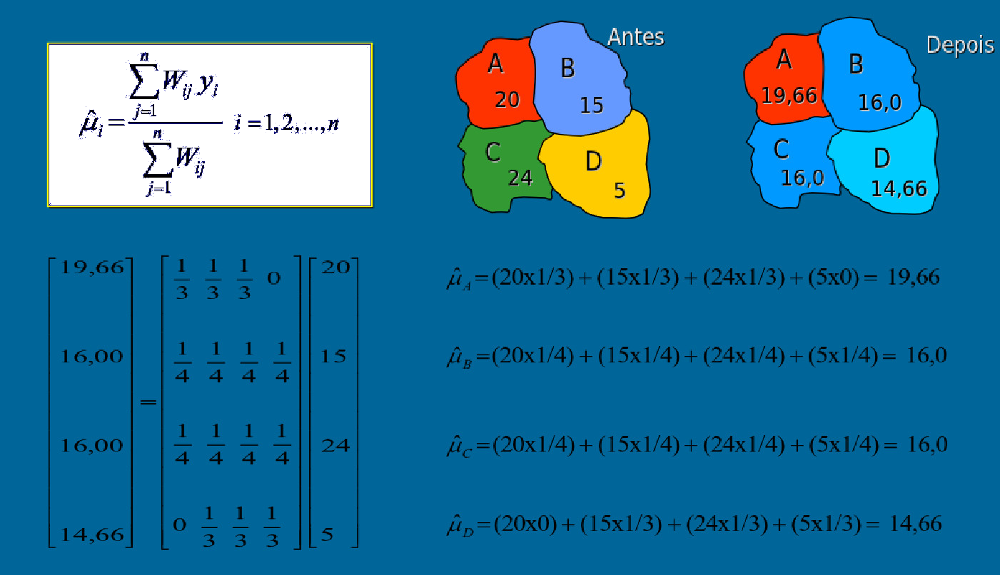
Ex: Percentual de idosos na cidade de São Paulo
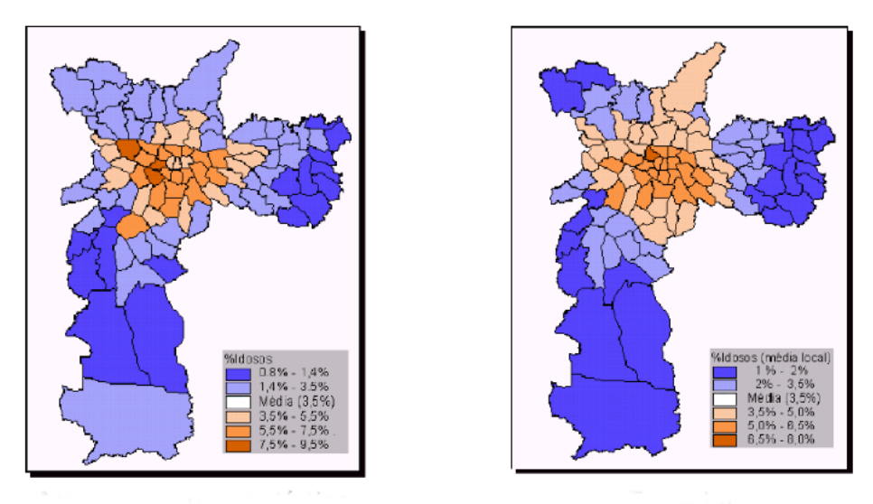
10.10 Kernel de Área (ou Atributo)
Utiliza-se para áreas alocando o valor do atributo a um ponto da área, por exemplo centróide geométrico ou populacional.
No kernel de um atributo contínuo (por ex., indicadores), inclui-se no denominador o kernel da distribuição dos centróides das áreas.
\[\hat{\mu}_{\tau}(s) = \dfrac{\sum\limits_{i=1}^{n} K \left( \frac{(s - s_i)}{\tau} \right) y_i \nonumber}{\sum\limits_{i=1}^{n} K \left( \frac{(s - s_i)}{\tau} \right) \nonumber}\]
Sendo:
\(k\) - Função kernel
\(\tau\) - Largura de banda
\(y_i\) - Atributo em cada ponto (centróide da área)
Obtém-se portanto a média do atributo na região.
Quando as observações representam uma contagem, como por exemplo contagem da população, cada ponto receberá o atributo \(p_i\) (população) alisado pela função \(k\), e largura de banda \(\tau\).
\[\hat{p}_{\tau}(s) = \sum\limits_{i=1}^{n} \dfrac{1}{\tau^2} K \left( \frac{(s - s_i)}{\tau} \right) p_i \nonumber\]
- Obtém-se portanto uma contagem de eventos por unidade de área.
Ex: Densidade dos casos de dengue no Rio de janeiro - 2008 a 2012
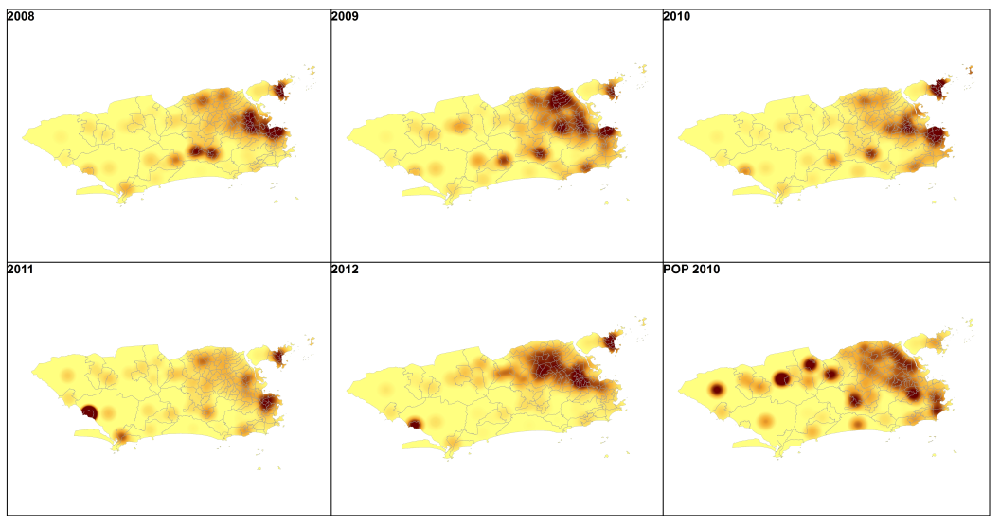
Como exemplo iremos plotar o kernel por atributo referente a taxa de detecção de hanseníase em Olinda/PE.
Primeiramente é necessário dissolver os poligonos em formato sf para obter o contorno. Nesse caso queremos preservar o atributo AREA
[1] “AREA” “PERIMETER” “SETOR_” “SETOR_ID” “VAR5” “DENS_DEMO” “SET” “CASES” “POP” “DEPRIV” “geometry” “tx”
Duas formas para plotar o contorno de Olinda/PE.

Ou utilizando a biblioteca spatstat.
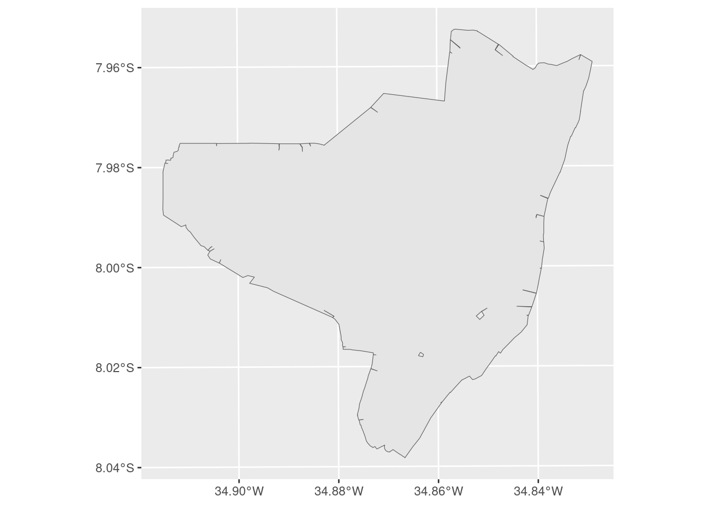
Mas podemos fazer de uma maneira bem mais simples onde não preservamos nenhum atributo!

Extraindo os centróidas dos polígonos em Olinda:
centroides <- st_centroid(st_geometry(olinda.sf))
# Transformando em os centróides em formato sp
centroides.sp <- as.data.frame(as_Spatial(centroides))
names(centroides.sp) <- c("X", "Y")
plot(centroides.sp)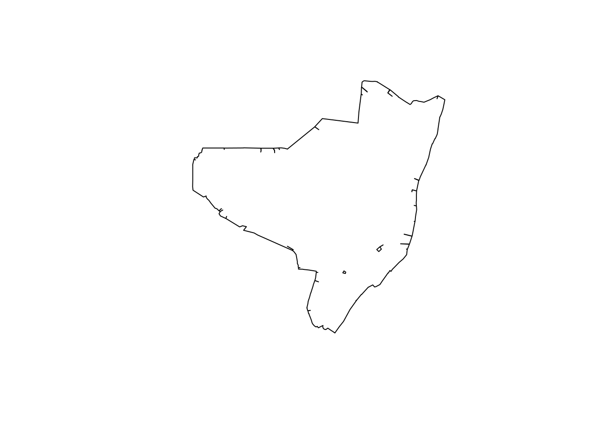
Colocando os pontos no formato sp:
centroides.ppp <- ppp(centroides.sp$X, centroides.sp$Y,
olinda.w)
plot(centroides.ppp, pch = 19, cex = 0.5)
Fazendo o kernel por atributo da taxa de detecção
kernel.tx <- density(centroides.ppp, 500, weights = olinda.sf$tx,
scalekernel = TRUE, diggle = T)
plot(kernel.tx)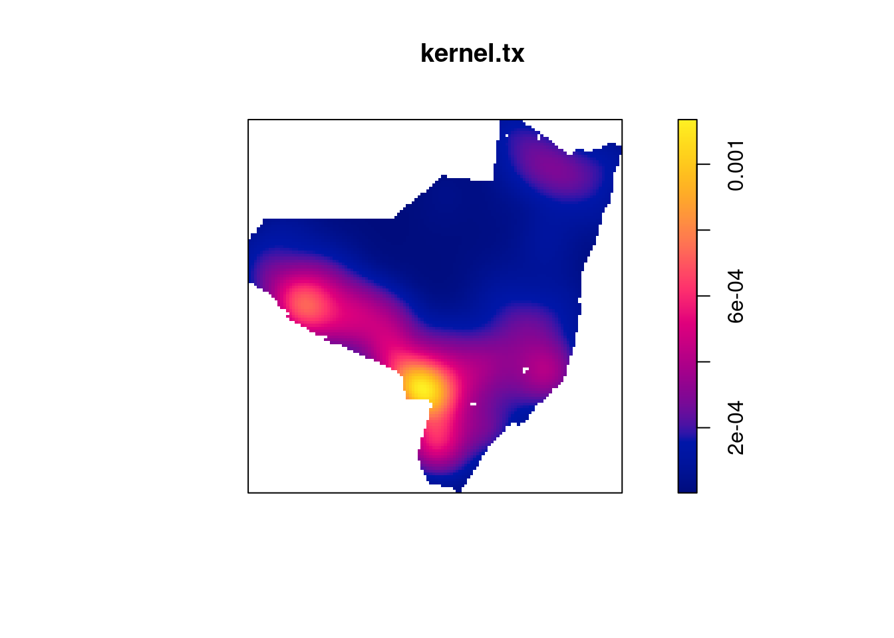
10.11 Correlação espacial e Correlograma
Em geoestatı́stica, utlizamos o covariograma e o variograma para analisar a estrutura de covariância do processo.
Ideias similares podem ser utilizadas para dados de área, supondo que os valores do atributo são localizados em um ponto dentro de cada área.
Precisamos incorporar as medidas de proximidade espacial (matriz de vizinhança) utilizadas em dados de área.
As técnicas mais comuns estimam correlação espacial ou autocorrelação espacial.
As medidas mais comuns são: Índice de Moran e Índice de Geary.
Para uma matriz de vizinhança \(W\) a correlação espacial Moran \(I\) é estimada como:
\[I = \dfrac{n \sum_{i=1}^n \sum_{j=1}^n w_{ij} (y_{i}-\bar{y})(y_{j}-\bar{y})}{(\sum_{i=1}(y_{i}-\bar{y})^2)(\sum \sum_{i\neq j} w_{ij})}\]
Sendo:
\(w_{ij}\) é o elemento da matriz de vizinhança.
O Índice de Moran é um teste cuja hipótese nula é de independência ou aleatoriedade espacial.
Valores positivos (entre 0 e 1) indicam correlação direta e negativos (entre -1 e 0) indicam correlação inversa.
Para uma matriz de vizinhança W a correlação espacial Geary C é estimada como
\[C = \dfrac{(n-1) \sum_{i=1}^n \sum_{j=1}^n w_{ij} (y_{i}-y_{j})}{2(\sum_{i=1}(y_{i}-\bar{y})^2)(\sum \sum_{i\neq j} w_{ij})}\]
Sendo:
\(w_{ij}\) o elemento da matriz de vizinhança.
O índice C de Geary assemelha-se ao variograma.
Podemos generalizar as estimativas de correlação espacial para diferentes lags e calcular o correlograma. Por exemplo, o índice de Moran no lag \(k\) é dado por:
\[I^{(k)} = \dfrac{n \sum_{i=1}^n \sum_{j=1}^n w_{ij}^{(k)} (y_{i}-\bar{y})(y_{j}-\bar{y})}{(\sum_{i=1}(y_{i}-\bar{y})^2)(\sum \sum_{i\neq j} w_{ij}^{(k)})}\]
Sendo:
\(w_{ij}\) o elemento da matriz de vizinhança no lag \(k\), \(W^{(k)}\)
Desta forma se constrói a função de autocorrelação para cada lag.
A significância estatística pode ser calculada por permutação ou, caso a variável tenha distribuição normal, por teste \(Z\).
Ex: Logaritmo da taxa mortalidade por homicídios no Sudeste, 1991.
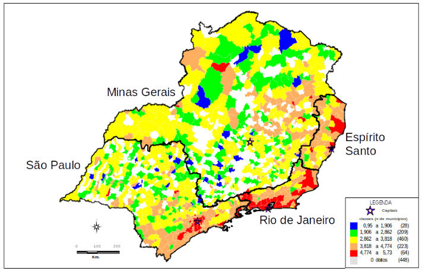
Ex: Correlograma da taxa mortalidade por homicídios no Sudeste, 1991.
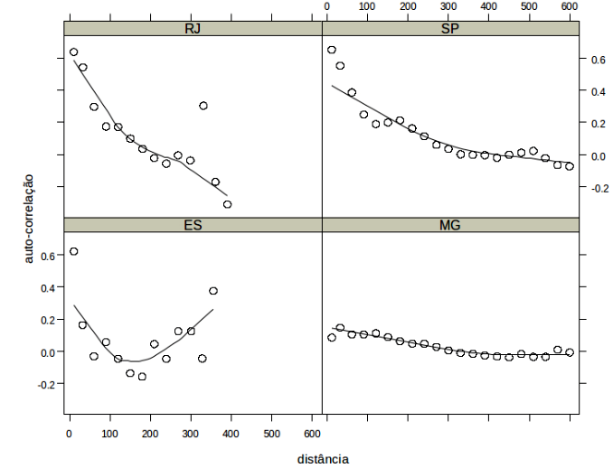
10.12 Indicadores Locais de Associação Espacial
Os indicadores globais de autocorrelação espacial, como o Índice de Moran, fornecem um único valor como medida da associação espacial para todo o conjunto de dados, o que é útil na caracterização da região de estudo como um todo.
Muitas vezes é desejável examinar padrões com mais detalhes.
Os indicadores locais permitem encontrar os “bolsões” de dependência espacial não evidenciados nos índices globais.
Permitem identificar:
Clusters: agrupamentos de objetos com valores semelhantes
Outliers: objetos anômalos
Existência de mais de um regime espacial
A significância estatística também é calculada por permutações e supõe-se normalidade da variável.
10.13 Indicadores Locais de Associação Espacial (LISA)
O Índice local de Moran pode ser expresso para cada área \(i\) a partir dos valores normalizados \(z_i\) do atributo como:
\[I_{i} = \dfrac{z_{i}\sum_{j=1}^{n} w_{ij}z_{j}}{\sum_{j=1}^n z_{j}^2}\]
Sendo \(z_i\) o desvio de i em relação a média global e \(z_j\) é a média dos desvios dos vizinhos de i.
\(i > 0\) - clusters de valores similares.
\(i < 0\) - clusters de valores distintos (Ex: uma localização com valores altos rodeada por uma vizinhança de valores baixos).
A significância estatística do uso do Índice de Moran local também deve ser computada.
Ex: Mapa temático com o Moran Global da Incidência de Hanseníase em São Paulo, 1989.
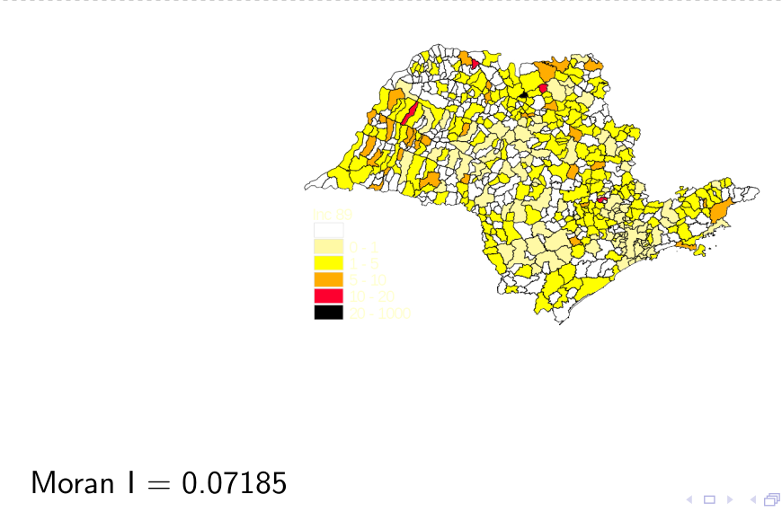
Ex: Moran Local da Incidência de Hanseníase em São Paulo, 1989.
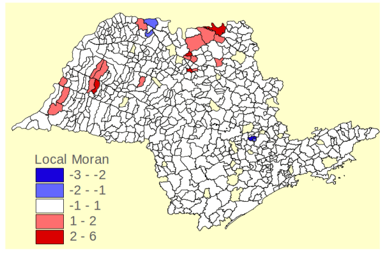
Obtendo a correlação da taxa de detecção de haseníase em Olinda/PE.
Moran I test under randomisationdata: na.omit(olinda.sf$tx)
weights: pesos.viz
Moran I statistic standard deviate = 10, p-value <2e-16 alternative hypothesis: greater sample estimates: Moran I statistic Expectation Variance 0.393148 -0.004167 0.001552
Plotando o correlograma
Spatial correlogram for olinda.sf$tx
method: Moran's I
estimate expectation variance standard deviate Pr(I) two sided
1 (241) 0.393148 -0.004167 0.001552 10.09 < 2e-16 ***
2 (241) 0.319179 -0.004167 0.000681 12.39 < 2e-16 ***
3 (241) 0.264313 -0.004167 0.000427 13.00 < 2e-16 ***
4 (241) 0.205452 -0.004167 0.000320 11.72 < 2e-16 ***
5 (241) 0.112051 -0.004167 0.000276 6.99 2.7e-12 ***
6 (241) 0.036724 -0.004167 0.000256 2.56 0.0105 *
7 (241) -0.050565 -0.004167 0.000248 -2.94 0.0032 **
8 (241) -0.107164 -0.004167 0.000300 -5.95 2.7e-09 ***
---
Signif. codes: 0 '***' 0.001 '**' 0.01 '*' 0.05 '.' 0.1 ' ' 1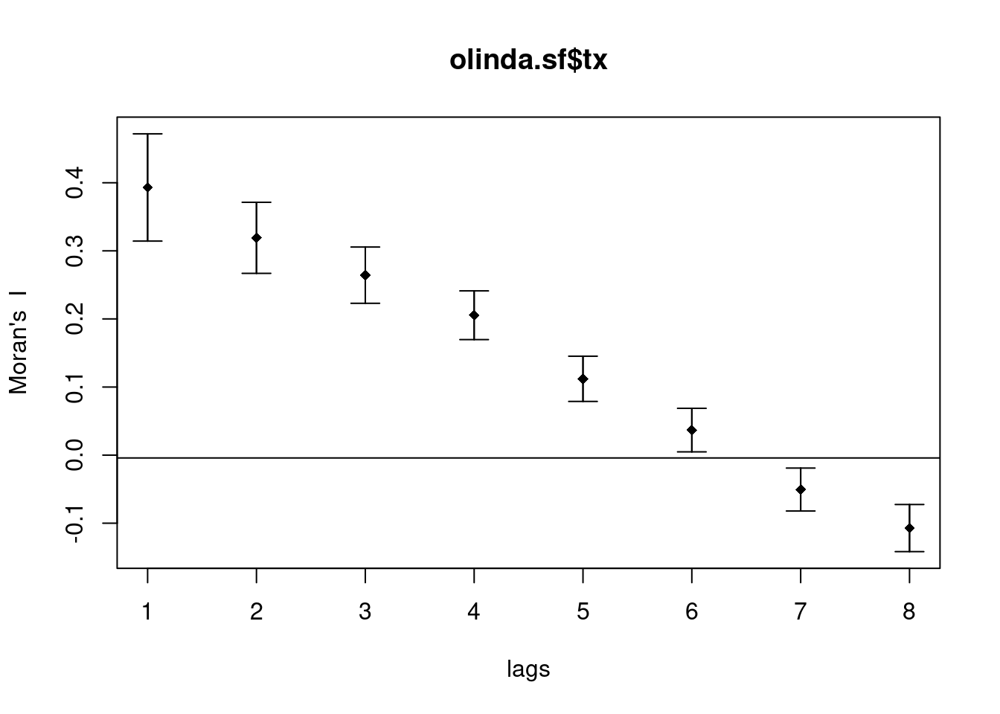
Mapeando os polígonos que tiveram os p-valores mais significativos no Moran Local.
olinda.sf$pval <- localmoran(olinda.sf$tx, pesos.viz)[,
5]
tm_shape(olinda.sf) + tm_polygons(col = "pval", title = "p-valores",
breaks = c(0, 0.01, 0.05, 0.1, 1), border.col = "white",
palette = "-Blues") + tm_scale_bar(width = 0.15)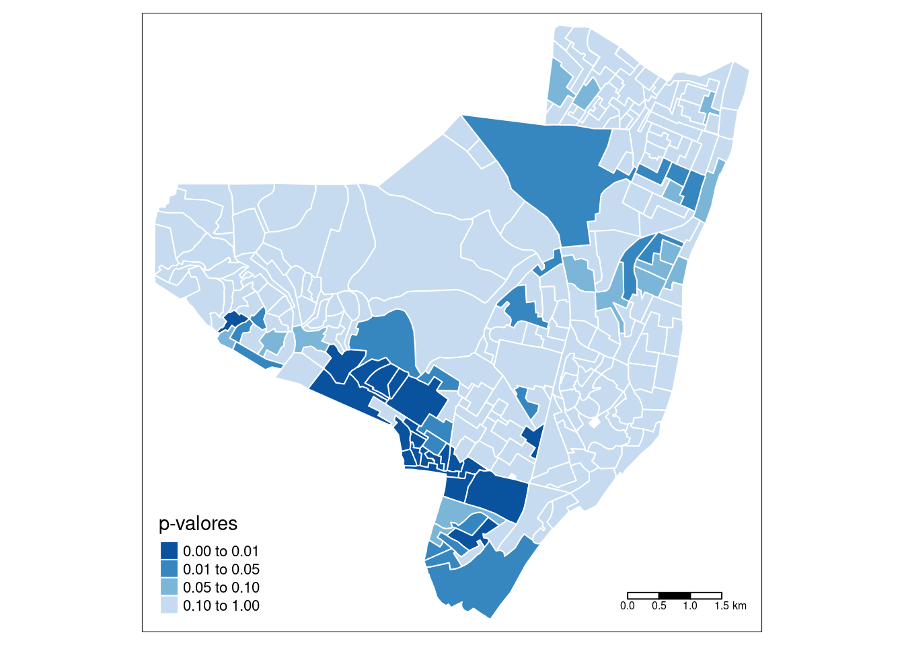
Moran Local (Lisa Map) da taxa de detecção de haseníase em Olinda/PE.
Local Morans I Stand. dev. (N) Pr. (N) Saddlepoint Pr. (Sad) Expectation Variance Skewness Kurtosis Minimum Maximum omega sad.r sad.u
1 1 0.12791 0.18796 0.8509 0.31170 0.7553 -0.004167 0.4938 -0.03470 8.709 -85.18 84.18 0.0010729 0.18582 0.19022
2 2 0.02554 0.05188 0.9586 0.08267 0.9341 -0.004167 0.3278 -0.04259 8.710 -69.49 68.49 0.0003738 0.05165 0.05173
3 3 0.15244 0.35459 0.7229 0.55676 0.5777 -0.004167 0.1951 -0.05521 8.711 -53.72 52.72 0.0030118 0.34460 0.37074
4 4 0.50274 0.72134 0.4707 0.97384 0.3301 -0.004167 0.4938 -0.03470 8.709 -85.18 84.18 0.0031202 0.65981 0.81172
5 5 0.42071 1.22465 0.2207 1.38111 0.1672 -0.004167 0.1204 -0.07028 8.712 -42.30 41.30 0.0082156 1.02832 1.47803
6 6 0.07649 0.11478 0.9086 0.19135 0.8483 -0.004167 0.4938 -0.03470 8.709 -85.18 84.18 0.0006678 0.11401 0.11502
7 7 -0.22400 -0.31283 1.2456 -0.50776 0.6116 -0.004167 0.4938 -0.03470 8.709 -85.18 84.18 -0.0016837 -0.30435 -0.32379
8 8 0.27513 0.85568 0.3922 1.09593 0.2731 -0.004167 0.1065 -0.07470 8.712 -39.83 38.83 0.0074344 0.76668 0.98683
9 9 0.32109 0.80844 0.4188 1.05417 0.2918 -0.004167 0.1619 -0.06061 8.711 -48.98 47.98 0.0058374 0.72961 0.92456
10 10 0.04132 0.07945 0.9367 0.13008 0.8965 -0.004167 0.3278 -0.04259 8.710 -69.49 68.49 0.0005709 0.07904 0.07936olinda.sf$MoranLocal <- summary(resI)[, 1]
olinda.sf$SaddlePoint <- summary(resI)[, 4]
library(scales)
map.moran <- ggplot(olinda.sf) + geom_sf(aes(fill = MoranLocal),
color = "black") + scale_fill_gradientn(colours = c("blue",
"white", "red"), values = rescale(c(min(olinda.sf$MoranLocal),
0, max(olinda.sf$MoranLocal))), guide = "colorbar") +
ggtitle("Moran local") + theme_void()
map.saddle <- ggplot(olinda.sf) + geom_sf(aes(fill = SaddlePoint),
color = "black") + scale_fill_gradientn(colours = c("blue",
"white", "red"), values = rescale(c(min(olinda.sf$SaddlePoint),
0, max(olinda.sf$SaddlePoint))), guide = "colorbar") +
ggtitle("Saddle Point") + theme_void()
grid.arrange(map.moran, map.saddle, nrow = 1)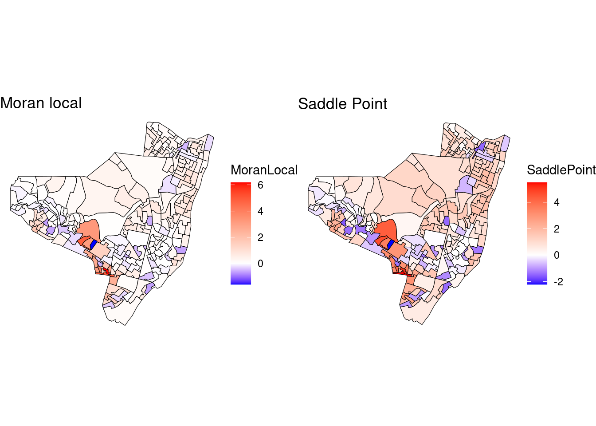
Em termos matemáticos, o SaddlePoint (ponto de sela) é o ponto onde a derivada parcial de primeira ordem do I de Moran é igual a zero, mas a derivada parcial de segunda ordem não é zero. Isso significa que o moran está em um estado de máximo local em uma direção, mas de mínimo local em outra direção.
Isso significa que o ponto é um ponto de equilíbrio instável, e a variável de interesse pode mudar de direção com um pequeno aumento ou diminuição na variável.
Os SaddlePoint são frequentemente usados para identificar áreas de transição entre diferentes padrões espaciais. Por exemplo, um SaddlePoint pode ser usado para identificar a fronteira entre duas áreas com densidades populacionais diferentes.
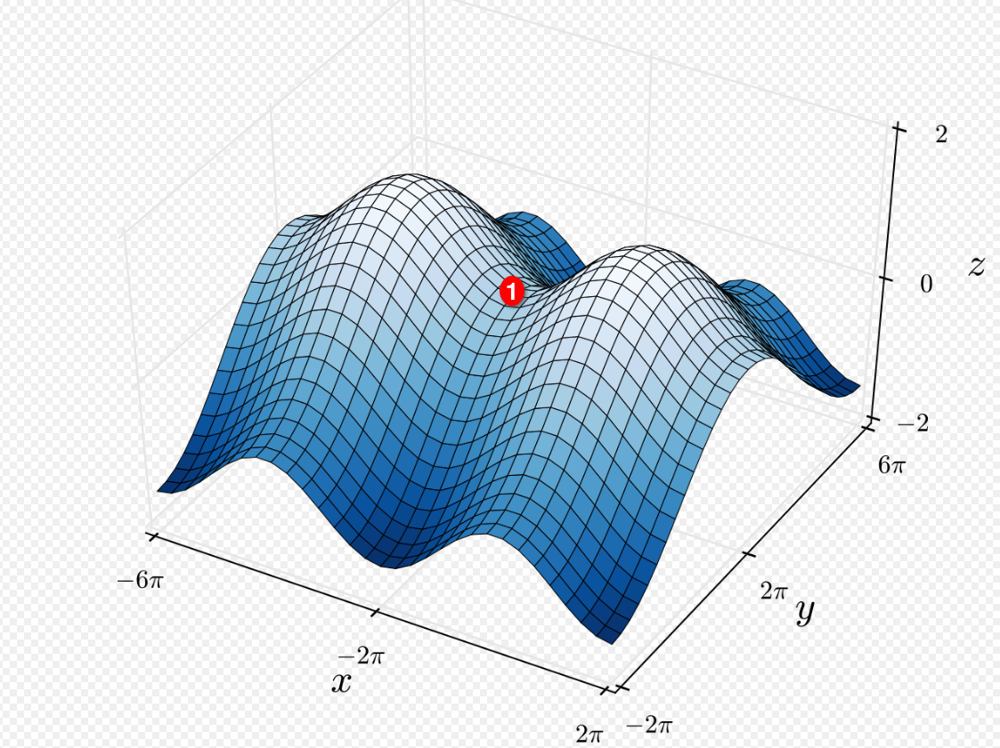
10.14 Método Bayesiano Empı́rico
Suponha \(\theta_i\) a taxa desconhecida na área \(i\) e seja \(r_i = \dfrac{y_i}{n_i}\) a taxa observada na área \(i\).
Suponha que temos uma distribuição a priori para \(\theta_i\) com média \(\mu_i\) e variância \(\phi_i\).
Assim a taxa bayesiana empírica é dada por:
\[\hat{\theta} = w_i r_i + (1-w_i)\mu_i\] Sabendo que:
\[w_i = \dfrac{\phi_i}{\phi_i +\mu_i/n_i}\]
- \(\mu_i\) e \(\phi_i\) são estimados a partir dos dados, supondo que \(\mu_i = \mu\) e \(\phi_i = \phi\).
EX: Taxa de Detecção de Hanseníase em Olinda/PE.
tx.bayes <- EBlocal(olinda.sf$CASES, olinda.sf$POP,
viz)
olinda.sf$tx.bayes <- tx.bayes[, 2] * 10000 # Incluindo somente a coluna da taxa bayesiana no banco olinda.sf
library(colorspace) # Para fazer o scale_fill_discrete_sequential
olinda.sf$brks <- cut(olinda.sf$tx, include.lowest = TRUE,
right = TRUE, breaks = c(-0.01, 0, 15, 30, 45,
100, 300), labels = c("0", "0 - 15", "15 - 30",
"30 - 45", "45 - 100", "> 100"))
mapa.tx.bruta <- ggplot(olinda.sf) + geom_sf(aes(fill = brks),
color = "black") + ggtitle("Taxa Bruta") + scale_fill_discrete_sequential(palette = "Heat",
na.value = "grey75", name = "Taxa") + theme_void()
olinda.sf$brks <- cut(olinda.sf$tx.bayes, include.lowest = TRUE,
right = TRUE, breaks = c(-0.01, 0, 15, 30, 45,
100, 231), labels = c("0", "0 - 15", "15 - 30",
"30 - 45", "45 - 100", "> 100"))
mapa.tx.bayes <- ggplot(olinda.sf) + geom_sf(aes(fill = brks),
color = "black") + ggtitle("Taxa Bayesiana empírica") +
scale_fill_discrete_sequential(palette = "Heat",
c1 = 80, c2 = 30, l1 = 30, l2 = 90, p1 = 0.2,
p2 = 1.5, na.value = "grey75", drop = FALSE,
name = "Taxa") + theme_void()
library(gridExtra)
grid.arrange(mapa.tx.bruta, mapa.tx.bayes, ncol = 2)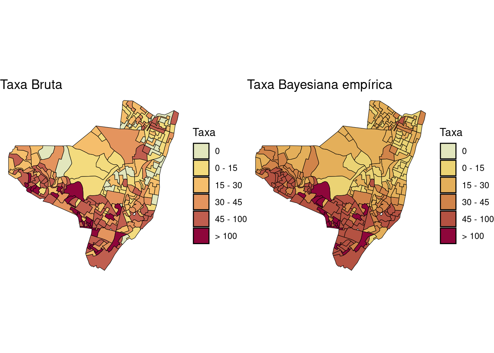
10.15 Uso de taxas padronizadas: Standardized mortality ratio(SMR) e Standardized Incidence Ratios (SIRs)
Para permitir comparações entre diferentes populações no espaço ou no tempo, as taxas devem ser padronizadas.
Padronizar as população de risco por tamanho, estrutura etária e sexo é comumente empregado.
O SMR/SIR permite comparar diferentes variáveis se adotamos uma escala única em vários mapas. Por exemplo, taxas de morbidade de doenças com incidência muito diferentes.
Padronização direta pode ser usada (com população mundial como padrão) quando queremos oferecer o estudo para possíveis comparações internacionais. Estas taxas tendem a ter mais variância.
Para cada região \(i\), calcula-se o número esperado de eventos caso o risco na área \(i\) seja igual ao risco esperado na região total.
\[E_i = Pop_{i} r\]
Sabendo que \(r = \dfrac{\sum O_i}{\sum Pop_i}\), ou seja, \(r\) é o número total de eventos em todas as regiões dividido pela população total das regiões.
Número esperado: \(SMR_i = O_i /E_i\).
É comum SMR/SIR ser multiplicada por 100.
Resumindo SMR/SIR é uma medida de risco absoluto e permite que a comparação seja feita entre populações com diferentes características, como idade, sexo, etc…
[1] 41.49casos <- olinda.sf$CASES
esperados <- (olinda.sf$POP * tx_media)
olinda.sf$SIR <- (casos/esperados) * 100
boxplot(olinda.sf$tx, olinda.sf$tx.bayes, olinda.sf$SIR,
names = c("Taxa bruta", "Taxa baeysiana empírica",
"SIR"), col = 3)
olinda.sf$brks <- cut(olinda.sf$SIR, include.lowest = FALSE,
right = TRUE, breaks = c(-0.01, 0, 15, 30, 45,
100, 600), labels = c("0", "0 - 15", "15 - 30",
"30 - 45", "45 - 100", "> 100"))
mapa.sir <- ggplot(olinda.sf) + geom_sf(aes(fill = brks),
color = "black") + ggtitle("SIR") + scale_fill_discrete_sequential(palette = "Heat",
c1 = 80, c2 = 30, l1 = 30, l2 = 90, p1 = 0.2, p2 = 1.5,
na.value = "grey75", drop = FALSE, name = "SIR") +
theme_void()
# mapa.sir10.16 Bibliografia sugerida
Trevor C. Bailey, Anthony C. Gatrell. Interactive Spatial Data Analysis. Routledge. 1995
Lance A. Waller, Carol A. Gotway. Applied Spatial Statistics for Public Health Data. Wiley-Interscience. 2004.
Roger S. Bivand, Edzer Pebesma, Virgilio Gomez-Rubio. Applied Spatial Data Analysis with R. Springer. 2013.